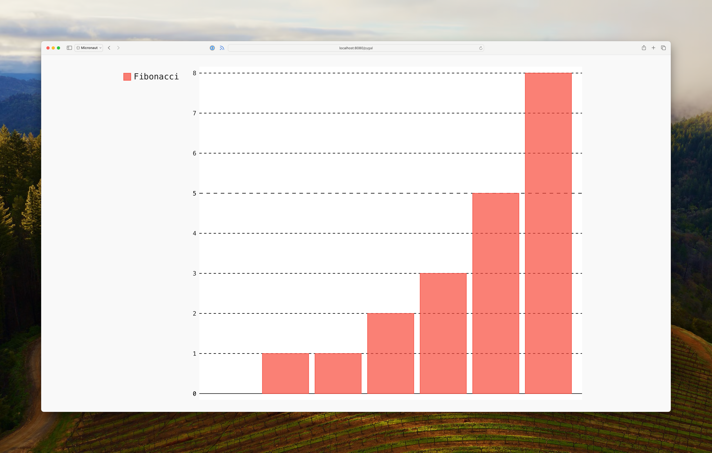

Creating a Micronaut GraalPy application using a Python package
Learn how to create a simple Micronaut GraalPy application using a third-party Python package.
On this guide
In this section
Getting Started
In this guide, we will create a Micronaut application written in Java.
What you will need
To complete this guide, you will need the following:
-
Some time on your hands
-
A decent text editor or IDE (e.g. IntelliJ IDEA)
-
JDK 21 or greater installed with
JAVA_HOMEconfigured appropriately
Solution
We recommend that you follow the instructions in the next sections and create the application step by step. However, you can go right to the completed example.
-
Download and unzip the source
Writing the Application
Create an application using the Micronaut Command Line Interface or with Micronaut Launch.
mn create-app example.micronaut.micronautguide \
--features=graalpy \
--build=maven \
--lang=java \
--test=junit
If you don’t specify the --build argument, Gradle with the Kotlin DSL is used as the build tool. If you don’t specify the --lang argument, Java is used as the language.If you don’t specify the --test argument, JUnit is used for Java and Kotlin, and Spock is used for Groovy.
|
The previous command creates a Micronaut application with the default package example.micronaut in a directory named micronautguide.
If you use Micronaut Launch, select Micronaut Application as application type and add graalpy features.
| If you have an existing Micronaut application and want to add the functionality described here, you can view the dependency and configuration changes from the specified features, and apply those changes to your application. |
GraalPy Maven Plugin
Insert a <packages> element into the GraalPy Maven Plugin <configuration> element, specifying the Python packages to download and install as shown below:
<plugin>
<groupId>org.graalvm.python</groupId>
<artifactId>graalpy-maven-plugin</artifactId>
<configuration>
<packages>
<package>pygal==3.0.4</package>
</packages>
</configuration>
<executions>
<execution>
<goals>
<goal>process-graalpy-resources</goal>
</goals>
</execution>
</executions>
</plugin>Adding <package>pygal==3.0.4</package> instructs the plugin to download and install the Python Pygal package at build time.
The package is included in the Java resources and becomes available to GraalPy.
Python code
We are going to use the StackedBar class from the Pygal package to render a graph in SVG format.
Java binding
Python code can be accessed programmatically using the GraalVM SDK Polyglot API, which enables you to embed Python into your applications.
In order to make it work, we first need a Java interface providing the intended binding to Python.
Create a Java interface with the following code:
Controller
To create a microservice that provides the graph rendered by Pygal you also need a controller.
Create a controller:
Test
Create a test to verify that when you make a GET request to /pygal you get the svg/xml response:
Testing the Application
To run the tests:
./mvnw testRunning the Application
To run the application, use the ./mvnw mn:run command, which starts the application on port 8080.
Open http://localhost:8080/pygal in a web browser of your choice to execute the endpoint. You should see a stacked bar chart.

Python Runtime Compilation
When using the GraalVM JDK, Python code executed with the GraalPy engine is just-in-time compiled. With other JDKs, the Python code is interpreted, resulting in reduced performance.
sdk install java 25.0.2-graalFor installation on Windows, or for a manual installation on Linux or Mac, see the GraalVM Getting Started documentation.
The previous command installs Oracle GraalVM, which is free to use in production and free to redistribute, at no cost, under the GraalVM Free Terms and Conditions.
Alternatively, you can use the GraalVM Community Edition:
sdk install java 25.0.2-graalceGraalVM JDK Compatibility
To enable runtime compilation, you must use versions of GraalPy and the Polyglot API dependencies that are compatible with the specified GraalVM JDK version. If you see errors like the following:
Your Java runtime '23.0.1+11-jvmci-b01' with compiler version '24.1.1' is incompatible with polyglot version '24.1.0'.You need to override the versions of the following dependencies according to the error message:
org.graalvm.polyglot:polyglot
org.graalvm.python:python
org.graalvm.python:python-embedding
org.graalvm.python:graalpy-maven-pluginGenerate a Micronaut Application Native Executable with GraalVM
Starting with GraalVM for JDK 23, Micronaut applications that use GraalPy or any Truffle language can be compiled into native executables using GraalVM Native Image.
Compiling Micronaut applications ahead of time with GraalVM significantly improves startup time and reduces the memory footprint of JVM-based applications.
Native Image Configuration
GraalVM Native Image compilation requires metadata to correctly run code that uses dynamic proxies.
Create a proxy configuration file:
[
["example.micronaut.PygalModule"],
["example.micronaut.PygalModule$StackedBar"],
["example.micronaut.PygalModule$Svg"]
]Native Executable Generation
To generate a native executable using Maven, run:
./mvnw package -Dpackaging=native-imageThe native executable is created in the target directory and can be run with ./target/micronautguide.
Open http://localhost:8080/pygal in your web browser to execute the endpoint exposed by the native executable. You should see a stacked bar chart.
Next Steps
Read more about Micronaut testing.
Help with the Micronaut Framework
The Micronaut Foundation sponsored the creation of this Guide. A variety of consulting and support services are available.
License
| All guides are released with an Apache License 2.0 for the code and a Creative Commons Attribution 4.0 license for the writing and media (images). |